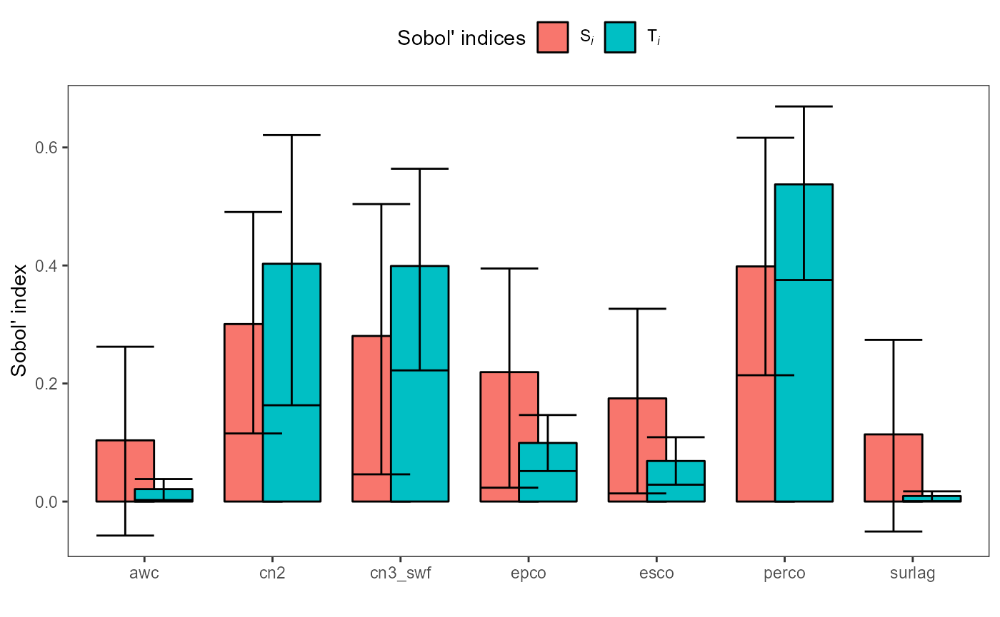

Aim of this article
This article should provide you with some approaches how you can
perform parameter sensitivity analysis with SWATplusR some
of the standard R packages for sensitivity analysis.
Although parameter sensitivity analysis is a wide field with many
different methods available I will focus on a few standard and (still)
state-of-the-art methods for Global Sensitivity Analysis (GSA). This
article will cover the following topics:
- Introduction into two
Rpackages for sensitivity analysis;sensitivity(Iooss et al., 2018) andsensobol(Puy et al., 2022) - Parameter screening with the Morris’ method (Morris, 1991)
- GSA with the VARS (Razavi and Gupta, 2016a, 2016b) method
- GSA with the Sobol’ method (Sobol, 1993), calculation of confidence intervals for sensitivity estimates
- temporal sensitivity analysis with Sobol’ indices
R packages for sensitivity analysis
Several R packages are available that provide widely
used methods for (global) sensitivity analysis. sensitivity
(Iooss et al.,
2018) for example is a very comprehensive collection of
methods, including the Morris’s “OAT” elementary effects screening
method (Morris,
1991), different variance-based methods to estimate for
example Sobol’ first order, second order and total indices (Sobol, 1993), and
extended-FAST sensitivity indices (A. Saltelli, 1999), or derivative
based methods such as Distributed Evaluation of Local Sensitivity
Analysis (DELSA, Rakovec et al. (2014)) , just to mention a few.
Another more recent R package to compute Variance-Based
Sensitivity Indices is sensobol (Puy et al., 2022). It includes methods
such as the Sobol’ method or VARS (Razavi and Gupta, 2016a, 2016b).
Most methods for sensitivity analysis require scalar model output to
assess the sensitivity of an output variable to changes in the model
inputs. To directly perform a sensitivity analysis on a simulated time
series of a SWAT model output variable the analysis can be performed for
example for each time step (temporal sensitivity analysis), or the
simulated time series is aggregated to a single value before it is used
in the analysis. One way could be to compute average annual values.
Another option is to use any performance measures and calculate e.g. a
goodness-of-fit value in comparison to observation data that is then
used in a sensitivity analysis. The latter approach is the most common
approach to be found in the literature. The hydroGOF
package (Mauricio
Zambrano-Bigiarini, 2017) for example provides a
comprehensive collection of performance measures used in hydrological
model performance assessment (and which you can also use in any
sensitivity analysis).
I personally prefer to perform sensitivity analyses directly on the simulation outputs, first because it does not require any observation data and second the analysis shows the direct effect of the simulated output to changes in e.g. the perturbed model parameters and does not require a performance metric that may have an emphasis on specific parts of the time series (e.g. NSE has a stronger weight on peaks).
To learn how you can use R packages for sensitivity
analysis together with SWATplusR I will share a few
examples and different approaches for sensitivity analysis in this
section. At the beginning I will introduce the two packages
sensivitity and sensobol and show how those
can be implemented in a general way. After the introduction we will go
through a simple parameter screening using the Morris’ method. After
that we will learn how to implement VARS and the Sobol’ method for
global sensitivity analysis which are can be considered as more in depth
analysis, which come however with higher computational costs. In the
last example I will show you how you can quickly transform the analysis
with the Sobol’ method into a temporal sensitivity analysis. For the
target variables (model outputs) that I use in the analyses I will
switch between aggregated long term average values and calculated Nash
Sutcliffe Efficiency (NSE, Nash and Sutcliffe (1970)) values as scalar variables to
demonstrate the different possible approaches that you can implement in
your analyses.
Package installation
If you do not have installed any of the required R package, follow the instructions for the respective R package. All of the required R packages are available from CRAN and can be installed with the following commands:
# If any of the packages is not installed already run the respective lines here.
# General data science packages, plotting etc.
install.packages('dplyr')
install.packages('tidyr')
install.packages('purrr')
install.packages('lubridate')
install.packages('forcats')
install.packages('stringr')
install.packages('ggplot2')
install.packages("patchwork")
# Packages for sensitivity analysis
install.packages('sensitivity')
install.packages('sensobol')
# Hydrological model performance metrics
install.packages('hydroGOF')Loading R packages
# General data science packages, plotting etc.
library(dplyr)
library(tidyr)
library(purrr)
library(lubridate)
library(forcats)
library(stringr)
library(ggplot2)
library(patchwork)
# Packages for sensitivity analysis
library(SWATplusR)
library(sensitivity)
library(sensobol)
# Hydrological model performance metrics
library(hydroGOF)Using sensitivity with SWATplusR
The concept of sensitivity is to keep the model
parameters, the analyzed model, and the sensitivity analysis results
together in one object in R. When you define a sensitivity
analysis, you pass the model parameters and the model together in one
function call. This is however not an optimal way to use
sensitivity with SWATplusR. A more intuitive
workflow with SWATplusR is to define the model parameter
sets, perform the simulations (maybe with parallel processing), return
the model results, and analyze the simulations or calculated performance
metrics with any sensitivity analysis method.
sensitivity offers a way to decouple the model
simulations and the sensitivity analysis with the function
tell(). You can first define a sensitivity analysis
experiment without passing model, run the simulations with the parameter
set that was defined in the experiment and calculate the sensitivity
indices afterwards with tell(). The simple example below,
that was taken from the tell() help page shows how the
decoupling works in a general way.
In this example a sensitivity analysis is designed using the eFAST
method. Three parameters (factors) and a sample size
n = 1000 are defined. The important step here is that the
model = NULL, which means that no model was passed to the
sensitivity analysis setup initially.
x <- fast99(model = NULL, factors = c('par1', 'par2', 'par3'), n = 1000,
q = "qunif", q.arg = list(min = -pi, max = pi))In a separate step the parameter set that was generated (stored in
x$X) is used to perform the model simulations. In the
simple example the ishigami.fun() an example function from
the sensitivity package is used to run the simulations.
With a SWAT model, simulations using e.g. run_swatplus
would now be performed instead.
y <- ishigami.fun(x$X)tell() brings the designed sensitivity analysis
x together with the model simulations. The sensitivity
indices are calculated and also stored in the object x.
tell(x, y)With print() you can print the results of the
sensitivity analysis.
print(x)
#>
#> Call:
#> fast99(model = NULL, factors = c("par1", "par2", "par3"), n = 1000, q = "qunif", q.arg = list(min = -pi, max = pi))
#>
#> Model runs: 3000
#>
#> Estimations of the indices:
#> first order total order
#> par1 3.076874e-01 0.5506015
#> par2 4.419659e-01 0.4697538
#> par3 3.429110e-29 0.2391275And with plot() you can visualize the results of the
sensitivity analysis.
plot(x)Using sensobol with SWATplusR
sensobol uses a concept that better fits the workflow of
SWATplusR. Parameter sampling, running the simulations and
the sensitivity analysis are by default decoupled. The short example
below again shows an analysis of the Ishigami function this time using
the Sobol’ method from sensobol. You can see that sampling,
simulation and analysis are 3 separate function calls.
# Define the parameter names
params <- paste("par", 1:3, sep = "")
# Create sample matrix to compute first and total-order indices
mat <- sobol_matrices(N = 500, params = params)
# Compute the model output (using the Ishigami test function)
Y <- ishigami_Fun(mat)
# Compute and the Sobol' indices
ind <- sobol_indices(Y = Y, N = 500, params = params)Again you can use print() to print the analysis
results.
print(ind)
#>
#> First-order estimator: saltelli | Total-order estimator: jansen
#>
#> Total number of model runs: 2500
#>
#> Sum of first order indices: 0.4342083
#> original sensitivity parameters
#> 1: 0.4574752335 Si par1
#> 2: 0.0013345109 Si par2
#> 3: -0.0246014634 Si par3
#> 4: 1.0218236406 Ti par1
#> 5: 0.0009107365 Ti par2
#> 6: 0.6165576890 Ti par3And you can also use plot() to plot the analysis
results.
plot(ind)Parameter screening with the Morris’ method
The Morris’ method is useful for parameter screening to identify the important parameters at a low cost (few number of simulations). The Morris’ method does however only analyze the elementary effects of model parameters (thus it is also called Morris’ elementary effects screening). It uses a one-step-at-a-time method (OAT) sampling design where only one parameter is changed in each step. The number of simulations which are required for the elementary effects screening is $r (p + 1) $, where \(p\) is the number of parameters and \(r\) is the number of repetitions of the OAT sampling.
In the example below we will perform a parameter screening for
simulated average annual sums of ET and average annual mean discharge.
The Morris’ method is implemented in sensitivity. For this
example and also the following examples we will use a small set of
parameter which are frequently used for model calibration.
Used Model parameters
Below I defined a table with the 7 model parameters, the type of
change I want to apply to the initial parameter values, and the upper
and lower boundaries of the changes that we will apply to the parameter
values. The syntax in the definition of SWAT model parameters with
SWATplusR is important and is explained with great detail
in the Get
started section. If you are not familiar with this concept, I
recommend you to go there first, before you continue with the
sensitivity analysis examples.
par_bound <- tibble('esco.hru | change = absval' = c(0, 1),
'epco.hru | change = absval' = c(0, 1),
'cn2.hru | change = abschg' = c(-15, 10),
'cn3_swf.hru | change = abschg' = c(-0.5, 0.5),
'surlag.bsn | change = absval' = c(0.05, 3),
'awc.sol | change = relchg' = c(-0.25, 0.25),
'perco.hru | change = abschg' = c(-0.5, 0.5))
# Extract parameter names from the names in par_bound
par_names <- str_remove(names(par_bound), '\\:\\:.*|\\..*')Defining the Morris’ screening experiment
As explained above we will define the Morris’ screening experiment
without passing a model (model = NULL) to the function
morris() and decouple the sensitivity analysis and the SWAT
simulations using the function tell() for the evaluation of
the simulation outputs. morris() provides different
sampling designs which are improvements over the experiment design that
was initially proposed by Morris (1991). Please see the R
package documentation if you want to implement one of those. For
demonstration we will use the default sampling design.
# Define the Morris experiment design
morris_sample <- morris(model = NULL, factors = ncol(par_bound), r = 4,
design = list(type = 'oat', levels = 5, grid.jump = 3))
# Assign the SWAT model parameter names to parameters in the experiment
colnames(morris_sample$X) <- par_namesThe experiment design results in a parameter set of 32 parameter
combinations. When printing the parameter set you can see a few things;
i) The model parameter range of each parameter is between 0 and 1, ii)
because we set levels = 5 the interval steps in the
parameter space is 0.25 as the range 0 to 1 was split into 5 levels. You
can see a clear pattern of the parameter jumps of single parameters
while the others are kept constant. The parameter
grid.jump = 3 defines that the sampling will jump 3 levels
when a parameter is changed.
morris_sample$X
#> esco epco cn2 cn3_swf surlag awc perco
#> [1,] 0.00 0.75 0.00 0.00 1.00 0.25 0.25
#> [2,] 0.00 0.75 0.00 0.00 1.00 1.00 0.25
#> [3,] 0.00 0.00 0.00 0.00 1.00 1.00 0.25
#> [4,] 0.00 0.00 0.00 0.00 0.25 1.00 0.25
#> [5,] 0.00 0.00 0.75 0.00 0.25 1.00 0.25
#> [6,] 0.00 0.00 0.75 0.75 0.25 1.00 0.25
#> [7,] 0.00 0.00 0.75 0.75 0.25 1.00 1.00
#> [8,] 0.75 0.00 0.75 0.75 0.25 1.00 1.00
#> [9,] 0.75 1.00 0.75 1.00 0.25 0.00 0.75
#> [10,] 0.00 1.00 0.75 1.00 0.25 0.00 0.75
#> [11,] 0.00 1.00 0.75 1.00 0.25 0.00 0.00
#> [12,] 0.00 1.00 0.75 1.00 0.25 0.75 0.00
#> [13,] 0.00 1.00 0.75 0.25 0.25 0.75 0.00
#> [14,] 0.00 1.00 0.75 0.25 1.00 0.75 0.00
#> [15,] 0.00 0.25 0.75 0.25 1.00 0.75 0.00
#> [16,] 0.00 0.25 0.00 0.25 1.00 0.75 0.00
#> [17,] 1.00 1.00 0.75 1.00 0.25 0.75 0.00
#> [18,] 1.00 1.00 0.75 1.00 0.25 0.75 0.75
#> [19,] 1.00 1.00 0.75 0.25 0.25 0.75 0.75
#> [20,] 1.00 1.00 0.75 0.25 0.25 0.00 0.75
#> [21,] 1.00 1.00 0.00 0.25 0.25 0.00 0.75
#> [22,] 1.00 0.25 0.00 0.25 0.25 0.00 0.75
#> [23,] 1.00 0.25 0.00 0.25 1.00 0.00 0.75
#> [24,] 0.25 0.25 0.00 0.25 1.00 0.00 0.75
#> [25,] 1.00 1.00 0.00 0.00 0.25 0.25 1.00
#> [26,] 1.00 1.00 0.00 0.00 1.00 0.25 1.00
#> [27,] 1.00 1.00 0.00 0.00 1.00 1.00 1.00
#> [28,] 1.00 1.00 0.00 0.75 1.00 1.00 1.00
#> [29,] 1.00 0.25 0.00 0.75 1.00 1.00 1.00
#> [30,] 0.25 0.25 0.00 0.75 1.00 1.00 1.00
#> [31,] 0.25 0.25 0.00 0.75 1.00 1.00 0.25
#> [32,] 0.25 0.25 0.75 0.75 1.00 1.00 0.25SWAT model simulations
As the sampled parameter values vary between 0 to 1 we have to transform them to the parameter boundaries that we defined for the SWAT model parameter. You can use the recipe below to transform parameter ranges from 0 to 1 to the actual parameter ranges. These lines of code you will find in many examples as the task of transforming parameter values from 0 to 1 to the actual SWAT parameter values will be often necessary.
par_morris <- morris_sample$X %>%
as_tibble(., .name_repair = 'minimal') %>% # Convert to a tibble
set_names(names(par_bound)) %>% # Assign the parameter names with purrr
map2_df(., par_bound, ~ (.x * (.y[2] - .y[1]) + .y[1]))We will again use the SWAT+ demo project to perform the model
simulations. You can load the demo path again by running
load_demo(), or use the demo path from previous examples,
if you do have the demo project already on your hard drive. Loading the
existing demoe with load_demo() in the same path will not
overwrite the existing demo, but will return the path to the demo
project that you can further use.
# The path where the SWAT demo project will be written
demo_path <- 'Define:/your/path'
# Loading a SWAT+ demo project
path_plus <- load_demo(dataset = 'project',
path = demo_path,
version = 'plus')We perform daily simulations for the basin average evapotranspiration
(et) and the discharge (q) in the channel of
the model setup.
sim_morris <- run_swatplus(project_path = path_plus,
output = list(et = define_output(file = 'basin_wb',
variable = 'et',
unit = 1),
q = define_output(file = 'channel_sd',
variable = 'flo_out',
unit = 1)),
parameter = par_morris,
start_date = 20030101,
end_date = 20121231,
start_date_print = 20060101,
n_thread = 4)
#> Building 4 threads in 'Define:/your/path/swatplus_rev60_demo/.model_run':
#> Completed 4 threads in 0S
#> Performing 32 simulations on 4 cores:
#> Completed 32 simulations in 1M 14S Output aggregation and sensitivity analysis
We will perform the sensitivity analysis with the Morris’ method for average annual values of ET and discharge. We could have also returned average annual values already in the model execution. I do prefer however to write daily values and perform any aggregation later on, as it gives me full control over the aggregation step. For the temporal aggregation we can again use the functions that we know from previous examples.
aggregate_annual <- function(tbl, fun) {
tbl %>%
mutate(year = year(date)) %>%
group_by(year) %>%
summarise(across(starts_with('run_'), ~ fun(.x)))
}To calculate average annual ET we first calculate annual sums and then calculate the average of the annual sums.
et_annual <- sim_morris$simulation$et %>%
aggregate_annual(., sum)
et_avann <- et_annual %>%
summarise(across(starts_with('run_'), .fns = mean)) %>%
unlist(.)As explained in the introduction of sensitivity above we
now have to “tell” our Morris’ sampling design the model output. This is
done with the function tell().
morris_et <- morris_sample
tell(morris_et, et_avann)print() returns the results of the sensitivity analysis
in tabular form.
print(morris_et)
#>
#> Call:
#> morris(model = NULL, factors = ncol(par_bound), r = 4, design = list(type = "oat", levels = 5, grid.jump = 3))
#>
#> Model runs: 32
#> mu mu.star sigma
#> esco 77.36638 77.36638 63.31053
#> epco 73.40938 73.40938 74.54560
#> cn2 -30.79586 30.79586 23.24428
#> cn3_swf 35.43714 35.43714 52.23233
#> surlag 0.00000 0.00000 0.00000
#> awc 43.16029 43.16029 14.98067
#> perco -86.30019 86.30019 38.16950plot() plots the resulting sensitivity of average annual
ET for the analyzed model parameters. Plotting sensitivity analyses
performed with sensitivity results in different plot types
depending on the used method. For Morris’ method the statistics \(\mu^{*}\) and \(\sigma\) are plotted, where \(\mu^{*}\) is the mean sensitivity value and
\(\sigma\) is its standard deviation.
\(\mu^{*}\) can be interpreted as the
direct effect of a parameter, while \(\sigma\) describes interaction effects of a
parameter.
In our example we can see that surlag does not have any effect on ET, while for example perco has a strong direct linear effect but a low interaction with other parameters. esco and epco, two other highly relevant parameters, show both large \(\mu^{*}\) and large \(\sigma\) values.
As we also simulated the discharge we can perform the same analysis with the average annual discharge. In this case we will simply calculate the mean discharge in \(m^3 s^{-1}\).
q_avann <- sim_morris$simulation$q %>%
summarise(across(starts_with('run_'), .fns = mean)) %>%
unlist(.)Again we “tell” our sampling design the simulated average annual values and plot the results of the sensitivity analysis. For the simulation of mean average annual discharge perco is again by far the most relevant parameter. This makes sense, as when larger amounts of water infiltrate the lower the average discharge will be. cn3_swf a parameter that is less important for ET is now more relevant. cn3_swf is a parameter that controls the calculation of the daily curve number values and thus affects the runoff. In contrast to perco, cn3_swf shows a large interaction component \(\sigma\). Again, surlag shows no relevance for discharge, although this parameter controls properties of the surface runoff. But we analyzed long term mean discharges here. That surlag does not have any impact on long term average values seems plausible to me.
Sensitivity analysis with VARS
VARS is a state-of-the-art method for global sensitivity analysis
(GSA) that implements variograms of the parameter response surface to
estimate parameter sensitivities. The calculation of total order VARS
sensitivity indices is implemented in the sensobol package.
Below I show two small example that implement the VARS method with
average annual SWAT+ simulation outputs but also when we use scalar
performance metrics.
STAR sampling
VARS uses a specific sampling design for which ‘center points’ in the
parameter space are defined. From these center points transects with a
defined step width h are sampled along each parameter
dimension. For our small VARS experiment we define the following STAR
sample.
# Number of STAR sample centers
star_centers <- 10
# Normalized step width of the transects
h <- 0.1
# Create STAR sample
star_sample <- vars_matrices(star.centers = star_centers, params = par_names, h = h)The number of star centers was set to
star_centers <- 10 in our example. For a practical
application this number should be larger and I would recommend to
increase the number to e.g. star_centers <- 50. In this
example I simply wanted to keep the computation time at acceptable
levels. 10 center points, 7 parameters and a step width of
h <- 0.1 resulted in 640 parameter combinations which we
use in our SWAT simulations. For the implementation in
run_swatplus() we have to transform the matrix
star_sample into a tibble with the proper
parameter names parameter value ranges which are defined in
par_bound. The procedure is the same as in the previous
example.
SWAT simulations
We will again simulate ET and discharge which we already analyzed in
the Morris’ example. We keep the same time periods and the same start
date to print simulation outputs. Hence the only input argument that we
have to change in the simulation run is the parameter set that we want
to use. We define parameter = par_star to implement the
parameter set that we sampled with the STAR sampling design.
sim_vars <- run_swatplus(project_path = path_plus,
output = list(et = define_output(file = 'basin_wb',
variable = 'et',
unit = 1),
q = define_output(file = 'channel_sd',
variable = 'flo_out',
unit = 1)),
parameter = par_star,
start_date = 20030101,
end_date = 20121231,
start_date_print = 20060101,
n_thread = 4)
#> Building 4 threads in 'Define:/your/path/swatplus_rev60_demo/.model_run':
#> Completed 4 threads in 0S
#> Performing 640 simulations on 4 cores:
#> Completed 640 simulations in 27M 45SCalculation of VARS sensitivity
The calculation of the total order sensitivity indices is done with
the function vars_to(). You have to provide scalar model
outputs (single value per parameter combination) and the STAR sample
including its sampling design. For ET we again use the average annual ET
sums. So we aggregate the daily simulations and use them to calculate
the parameter sensitivities.
et_avann <- sim_vars$simulation$et %>%
aggregate_annual(., sum) %>%
summarise(across(starts_with('run_'), .fns = mean)) %>%
unlist(.)
vars_et <- vars_to(Y = et_avann, star.centers = star_centers,
params = par_names, h = h)Printing the sensitivity analysis results with VARS gives you a table with the total order sensitivity values for the analyzed parameters. The \(Ti\) values can vary in a range between 0 and 1, where 0 indicates that a parameter has no relevance and values closer to 1 mean large sensitivities. As with the Morris’ method surlag has no influence. epco results to be the most relevant parameter, followed by perco.
vars_et
#>
#> Number of star centers: 10 | h: 0.1
#>
#> Total number of model runs: 640
#> Ti parameters
#> 1: 0.23730114 esco
#> 2: 0.66438595 epco
#> 3: 0.06175698 cn2
#> 4: 0.01860577 cn3_swf
#> 5: 0.00000000 surlag
#> 6: 0.16586504 awc
#> 7: 0.39084430 percosensobol does not provide a function to plot the results
of a VARS analysis. But using the table vars_et$results
with ggplot you can quickly generate your own plot, like in
the short example below.
SWATdata provides observation data for the discharge at
the demo catchment outlet. For the simulated discharge we will now use
calculate NSE values from the daily simulated and the
observed discharge and use those scalar performance metrics in the
sensitivity analysis.
We first have to load the observation data with
load_demo() and trim it to the same time period as we
performed our simulations for.
Below we use map_dbl() to apply the function
NSE() to all simulated time series of the discharge to
calculate the NSE values for all parameter combinations of
our STAR parameter set.
With vars_to() we again calculate the total order
sensitivity values.
vars_nse_q <- vars_to(Y = nse_q, star.centers = star_centers,
params = par_names, h = h)The parameter perco has the strongest impact on the daily
discharge simulations when they are evaluated with the NSE.
The parameters cn2 and cn3_swf are as well relevant
for the simulation of discharge. Although the impact of surlag
is not 0 it is rather low (same applies to awc).
Sensitivity analysis with the Sobol’ method
The Sobol’ method is a well established method to perform global
sensitivity analysis and is often considered as a benchmark method to
e.g. compare new methods to. Both of the presented R
packages sensitivity and sensobol offer a
large number of implementations of the Sobol’ method with adjustments
such as different sampling schemes and adapted estimators for the first
and total order sensitivity indices. In the example below we use the
implementation of the Sobol’ method from the sensobol
package. Without executing the code I added the setup of the Sobol’
sensitivity analysis with the sensitivity package below.
The function calls differ a bit. But eventually the same analysis would
be performed.
Parameter sampling
With sobol_matrices() you sample the parameter matrices
which are needed to compute Sobol’ indices. The function requires a base
sample size that we defined with n <- 100 here. We will
see below in the results that the confidence intervals of the calculated
sensitivity indices will be wide. Thus, in an actual application of the
Sobol’ method I would recommend to use base sample sizes larger that 500
to 1000. Such large samples would however be computationally expensive
and we therefore use the lower sample size. With
order = 'first' we define that we want to calculate only
first and total order sensitivities. In this case the function would
create a matrix with \(n \cdot (p +
2)\) parameter combinations, where n is the base sample size and
p is the number of parameters. In our case we have to perform the
simulations for 900 parameter combinations.
n <- 100
sobol_mat <- sobol_matrices(N = n, params = names(par_bound), order = 'first')Again we have to transform the parameter values to the ranges of the actual SWAT model parameters that we will use in the model simulations.
SWAT model simulations
As in the previous examples we will simulate ET and the discharge.
Because the number of required simulations is large than in the previous
examples we will use a shorter simulation period between
start_date = 20050101 and end_date = 20101231
where we print the years starting from
start_date_print = 20080101. We will also use the new
parameter set parameter = par_sobol now for the
simulations.
sim_sobol <- run_swatplus(project_path = path_plus,
output = list(et = define_output(file = 'basin_wb',
variable = 'et',
unit = 1),
q = define_output(file = 'channel_sd',
variable = 'flo_out',
unit = 1)),
parameter = par_sobol,
start_date = 20050101,
end_date = 20101231,
start_date_print = 20080101,
n_thread = 4)
#> Building 4 threads in 'Define:/your/path/swatplus_rev60_demo/.model_run':
#> Completed 4 threads in 0S
#> Performing 900 simulations on 4 cores:
#> Completed 900 simulations in 21M 6S
#> Performing 450 simulations on 4 cores:
#> Completed 450 simulations in 12M 51S Sobol analysis for average annual ET
For the analysis of ET we will again use average annual values that
we calculate with code from the previous examples. The Sobol’
sensitivity indices are calculated with the function
sobol_indices(). In this function you have different
options to calculate first and total order
sensitivities. I selected the method of Jansen (1999) here. You
could select any of the available methods. The simple reason why I
selected this method over others here is because it results in smaller
confidence intervals with the small selected base sample. So this is
just for demonstration reasons. To get conficence intervals you have to
set boot = TRUE and provide a value for the bootstrap
replicas R.
et_avann <- sim_sobol$simulation$et %>%
aggregate_annual(., sum) %>%
summarise(across(starts_with('run_'), .fns = mean)) %>%
unlist(.)
sobol_et <- sobol_indices(Y = et_avann, N = n, params = par_names,
first = "jansen", total = 'jansen',
boot = TRUE, R = 100)With bootstrapping the results table is now more comprehensive as it also provides e.g. a standard error and the lower and upper confidence intervals for the estimates of the sensitivity indices. The results show the first order and total order sensitivities together in one table.
sobol_et
#>
#> First-order estimator: jansen | Total-order estimator: jansen
#>
#> Total number of model runs: 900
#>
#> Sum of first order indices: 0.7842864
#> original bias std.error low.ci high.ci sensitivity
#> 1: 0.072933021 -0.0110289078 0.084874880 -0.082389778 0.25031364 Si
#> 2: 0.483465576 -0.0021534952 0.065960955 0.356337975 0.61490017 Si
#> 3: 0.021484098 -0.0031559127 0.084708895 -0.141386373 0.19066639 Si
#> 4: -0.008710804 0.0006357511 0.081270816 -0.168634427 0.14994132 Si
#> 5: -0.035221870 -0.0017282910 0.084528029 -0.199165472 0.13217831 Si
#> 6: 0.065330458 0.0031669326 0.089934866 -0.114105572 0.23843262 Si
#> 7: 0.185005918 -0.0141125583 0.097839941 0.007355715 0.39088124 Si
#> 8: 0.140854763 0.0045212605 0.032219436 0.073184569 0.19948244 Ti
#> 9: 0.475671672 0.0170372765 0.061370180 0.338351054 0.57891774 Ti
#> 10: 0.030857046 -0.0002044961 0.005935057 0.019429043 0.04269404 Ti
#> 11: 0.016990857 0.0001053053 0.005182207 0.006728613 0.02704249 Ti
#> 12: 0.000000000 0.0000000000 0.000000000 0.000000000 0.00000000 Ti
#> 13: 0.077937102 0.0018423710 0.012304079 0.051979178 0.10021028 Ti
#> 14: 0.276161819 0.0024053693 0.038292068 0.198705377 0.34880752 Ti
#> parameters
#> 1: esco
#> 2: epco
#> 3: cn2
#> 4: cn3_swf
#> 5: surlag
#> 6: awc
#> 7: perco
#> 8: esco
#> 9: epco
#> 10: cn2
#> 11: cn3_swf
#> 12: surlag
#> 13: awc
#> 14: percoFor the Sobol’ method sensobol provides a
plot() option. plot() returns a
ggplot for both, the first and the total order sensitivity
values for the analyzed parameters. The whiskers show the confidence
intervals of the sensitivity estimates. The results are comparable to
the previous sensitivity experiments with the largest sensitivity values
for epco and perco. We used the bootstrapping option
for the Sobol’ indices which give us an idea about the uncertainties of
the estimates. Due to the used small base sample size the confidence
intervals are large. You can try other methods for the calculation of
the first and total order sensitivities and you will see that the
confidence intervals computation can then lead to even more excessive
values.
plot(sobol_et)Using sensitivity for the Sobol’ analysis
The code below performs the Sobol’ analysis using the
sensitivity package instead of sensobol. The
implementation of methods in sensitivity is even more
comprehensive compared to sensobol. Eventually the use of
both methods should lead to comparable results as both use variants of
the Sobol’ method. The code below is no complete workflow but should
show you the differences in the application of the Sobol’ method.
ns <- 100
np <- length(par_names)
X1 <- data.frame(matrix(runif(np * ns), nrow = ns)) %>% set_names(par_names)
X2 <- data.frame(matrix(runif(np * ns), nrow = ns)) %>% set_names(par_names)
sobol_sample <- sobolSalt(model = NULL, X1, X2, scheme="A", nboot = 100)
par_sobol <- sobol_sample$X %>%
as_tibble(., .name_repair = 'minimal') %>% # Convert to a tibble
set_names(names(par_bound)) %>% # Assign the parameter names with purrr
map2_df(., par_bound, ~ (.x * (.y[2] - .y[1]) + .y[1]))
# Here you would simulate ET and aggregate to average annual values.
tell(sobol_sample, et_avann)
row.names(sobol_sample$S) <- par_names
row.names(sobol_sample$T) <- par_names
print(sobol_sample)
ggplot(sobol_sample, choice=1) +
theme(axis.text.x = element_text(hjust = 0.5))Sobol analysis for NSE values of discharge
In contrast to the example of average annual ET values we will implement NSE values as scalar output variables in the sensitivity analysis. The NSE expresses the goodness-of-fit of the simulated discharge compared to the observed discharge in a scalar value between \(-\inf\) and 1.
For the evaluation of the simulated discharge time series with
observed data we will load the the observation data for the demo model
setup using load_demo(). We trim the observed data to the
same time period as the simulations with filter().
To get a vector of NSE values for all simulated discharge
time series we NSE() from the hydroGOF package
and map over all simulated time series.
We again use sobol_indices() to estimate the Sobol’
indices for the parameters and the calculated NSE values. We
will leave the settings from the ET example unchanged.
sobol_nse_q <- sobol_indices(Y = nse_q, N = n, params = par_names,
first = "jansen", total = 'jansen',
boot = TRUE, R = 100)Below we again use plot() to do a ggplot of the Sobol’
analysis. The results are comparable to the ones of the VARS analysis,
where the largest sensitivity inidices were found for perco,
cn2, and cn3_swf. Also in this example the confidence
intervals are wide and in a practical applicaction we might use a larger
base sample size.
plot(sobol_nse_q)
Temporal sensitivity analysis
With a few steps we can transform the sensitivity analysis into a temporal analysis, where we can use the daily simulations for the sampled Sobol’ parameter set. This example gives another good argument why I prefer to do all simulations with daily time steps and perform any data aggregation after the simulations. It is always better to keep all information and reduce it when we have to.
The small difference between the previous sensitivity analyses and a temporal one is simply that before we aggregated the simulated time series to scalar values, while now we just do the analysis for the simulated values of each time step which are already scalar values. There is really not more to that!
To achieve this calculation in practice we will loop over all the
time steps of the simulations and perform a sensitivity analysis in each
time step. For a later analysis we will then put the results of all
individual analyses together into one table. The looping will be done in
a for loop (At this point I have to assume that you are
familiar with basic elements of programming such as for
loops). Before we iterate over all dates we generate an empty list
s where we will store the analysis results for each time
step as an individual element in this list. To make the analysis a bit
simpler and shorter we will do the analysis only for the days of the
year 2009. Thus we extract the simulated discharges of the year 2009
from our simulations and assign them to the variale q_2009.
In the loop we again use the function sobol_indices() for
the calculation of the Sobol’ indices. By taking only the \(i^{th}\) line of the discharge data and the
columns starting from 2 (q_2009[i, 2:ncol(q_2009)) we
perform the analysis for all discharges on the day \(i\). The unlist() is necessary
here to convert the values from the table to a vector. All other input
arguments in sobol_indices() we know already from the
previous examples. After the loop we bind all results together into one
table using bind_rows().
s <- list()
q_2009 <- filter(sim_sobol$simulation$q, year(date) == 2009)
for (i in 1:nrow(q_2009)) {
s[[i]] <- sobol_indices(Y = unlist(q_2009[i, 2:ncol(q_2009)]),
N = n, params = par_names,
first = "jansen", total = 'jansen',
boot = TRUE, R = 100) %>%
.$results %>%
as_tibble(.) %>%
mutate(., date = q_2009$date[i])
}
s <- bind_rows(s)We want to show the temporal sensitivity analysis in a rather comprehensive plot, where we want to show the simulated upper and lower bounds of discharge together with the first and total order Sobol’ estimates for the parameters including the calculated confidence intervals.
In a first step we prepare the discharge data of the year 2009
(q_2009) for the plot of the simulated ranges. Below we
select all columns except the .$date column and calculate
the minimum and maximum values for each line (time step) using the
pmap_dbl() function and passing it the functions
min() and max(). In general this is a very
efficient way to calculate rowwise values. There are other ways (you can
e.g. look for rowwise() and the across*()
functionality of dplyr. The base R way would
be to e.g. use apply()) but some of those approaches are
sometimes a bit slow. Finally, we only select the computed min and max
values qmin and qmax and add again the
date.
q_bound <- q_2009 %>%
select(-date) %>%
mutate(qmax = pmap_dbl(., max),
qmin = pmap_dbl(., min)) %>%
select(qmin, qmax) %>%
mutate(date = q_2009$date, .before = 1)For the discharge we prepare a ggplot where we will show
the simulated ranges as grey areas (geom_ribbon()). The
boundaries of the area we border with lines (geom_line()).
We give our plot the final touch by adding a better y-axis title and use
the black and white theme (theme_bw() which I prefer a bit
over the standard theme). We will also remove all the text on the x-axis
with theme() settings, as we will put the discharge and the
sensitivity plot together in the final step below.
q_plot <- ggplot(q_bound) +
geom_ribbon(aes(x = date, ymin = qmin, ymax = qmax), fill = 'grey30', alpha = 0.3) +
geom_line(aes(x = date, y = qmin), col = 'grey30') +
geom_line(aes(x = date, y = qmax), col = 'grey30') +
labs(y = expression (Discharge~(m^3~s^{-1}))) +
theme_bw() +
theme(axis.title.x = element_blank(),
axis.text.x = element_blank())The sensitivity plot should have a similar structure as the discharge
plot. Again we plot the calculated confidence intervals with areas
(geom_ribbon()) and border them with lines
(geom_line()). The time series of the sensitivity estimates
should also be plotted with lines. We define the fill colors and the
line colors for the first and total order sensitivities with
scale_color_manual() and scale_fill_manual().
With labs() we give the Axes and the legend entries better
names. As we control the plot properties color and
fill with the sensitivity index type we give
both arguments the same name. With facet_grid() we split
the plots for the different parameters we analyzed. We use
coord_cartesian() to limit the plot window to the range
-0.1 and 1.1. The Sobol’ estimates have a plausible range between 0 and
1. The estimates and their confidence intervals cna however also lie
outside of these ranges. It would make the plot hard to read when we
show the entire calculated ranges. To show the smaller range but to plot
e.g. the confidence bands considering the data that lies outside of this
range we have to limit the plot canvas with
coord_cartesian() instead of using e.g. ylim()
or lims(). With scale_y_continuous() we define
the breaks of the y-axis. Again we use a ‘nicer’ theme and place the
legend at the bottom of the plot.
sens_plot <- ggplot(s) +
geom_hline(yintercept = 0, lty = 'dotted') +
geom_ribbon(aes(x = date, ymin = low.ci, ymax = high.ci, fill = sensitivity), alpha = 0.3) +
geom_line(aes(x = date, y = low.ci, col = sensitivity), size = 0.25, alpha = 0.3) +
geom_line(aes(x = date, y = high.ci, col = sensitivity), size = 0.25, alpha = 0.3) +
geom_line(aes(x = date, y = original, col = sensitivity), size = 0.75) +
scale_color_manual(values = c('tomato3', 'steelblue')) +
scale_fill_manual(values = c('tomato3', 'steelblue')) +
labs(x = 'Date', y = 'First and total order sensitivity',
color = 'Sensitivity index', fill = 'Sensitivity index') +
facet_grid(rows = vars(parameters)) +
coord_cartesian(ylim = c(-0.1, 1.1)) +
theme_bw() +
theme(legend.position = 'bottom')
#> Warning: Using `size` aesthetic for lines was deprecated in ggplot2 3.4.0.
#> ℹ Please use `linewidth` instead.We use the patchwork package to ‘patch’ our two plots
together. This plot gives us a wonderful insight into the processes that
control the simulated discharge and which parameters control these
processes in their temporal sequence.
q_plot / sens_plot + plot_layout(heights = c(0.3, 0.7))